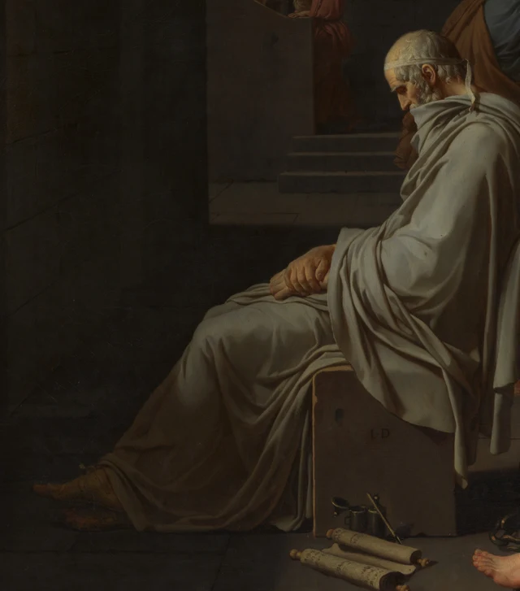

Regardons d’abord la main qui n’a pas encore saisi la coupe. Les doigts se recourbent au-dessus du bord ; l’autre main, elle, se lève, l’index dressé. L’homme assis sur le lit s’apprête à recevoir ce qui lui donnera la mort, mais il semble avoir encore quelque chose à dire. Le jeune homme qui lui tend la coupe détourne le visage tout en maintenant le bras vers lui. Un infime intervalle sépare leurs mains, tandis que leurs regards ne se rencontrent pas.

L’événement représenté a lieu à Athènes, en 399 avant notre ère. Condamné à mort, Socrate passe encore sa dernière journée à discuter de l’âme et de la mort avec ses amis. Le Phédon de Platon est l’un des principaux récits de cet adieu qui nous soient parvenus. Lorsque David le peint, plus de deux millénaires se sont écoulés. Issu d’une commande privée de la famille Trudaine, le tableau est exposé au Salon de Paris en 1787, deux ans avant le début de la Révolution française. À l’époque des Lumières, les questions du jugement public, des principes personnels et des vertus antiques donnent à ce sujet un poids dans le présent. Pour comprendre l’œuvre, il importe aussi de conserver ce repère précis de 1787. Catalogue scientifique, notice 106
Cet essai propose de partir de la coupe qui n’a pas encore changé de main : la mort approche, la discussion continue. Le tableau donne à Socrate une présence résolue, tout en laissant les corps qui l’entourent porter la douleur de le perdre. En suivant ces corps, nous rencontrerons aussi quelqu’un qui n’était pas présent ce jour-là. Son apparition fait entrer dans cette scène de mort le temps qui viendra après elle.
Encore une parole avant la coupe
La première impression que donne cette prison est celle de la dureté. De gros blocs de pierre forment les murs ; les joints entre les pierres s’étendent horizontalement derrière les personnages. Le bois du lit et les sièges de pierre ont eux aussi des arêtes nettes. La lumière ne pénètre pas partout. À gauche, le passage voûté reste sombre, et les personnages qui s’éloignent sur les marches deviennent plus petits, moins distincts. Au premier plan, un espace dégagé permet au regard de traverser les dalles avant d’atteindre le groupe.
Les corps se déploient horizontalement et se lisent presque comme un relief sculpté. Les plis des étoffes blanches dessinent des pans bien définis ; les épaules, les dos et les torses nus prennent leur volume en sortant de l’ombre. La couleur demeure contenue. Entre les grandes surfaces gris-brun du mur et du sol, le rouge, le jaune et les drapés bleus se concentrent sur les personnages. Le rouge du jeune homme à la coupe attire particulièrement l’œil, un peu à gauche du centre, puis son bras conduit le regard jusqu’au récipient. La clarté et l’ordre associés au néoclassicisme prennent ici des formes précises. Ils n’impliquent pas que tous les personnages répriment leurs émotions.
Le corps de Socrate est le plus éclairé, mais aussi le plus découvert. L’étoffe descend de son épaule et se rassemble autour de sa taille, laissant visible une grande partie du torse et de l’abdomen. La tête est haute, le buste droit, une jambe s’allonge sur le lit. Ce corps vigoureux est idéalisé, à distance de l’homme d’environ soixante-dix ans qu’était le Socrate historique. Il nous fait d’abord éprouver une vie encore pleine de force. La mort annoncée par le titre paraît alors d’autant plus proche : ce qui va être interrompu, c’est cet homme encore capable de parler, de tendre la main et de se tourner vers autrui.

Le mouvement de la main droite est minime. Les doigts ne saisissent pas encore la coupe, sans pour autant se retirer. Il suffirait d’avancer un peu pour que le passage d’une main à l’autre s’accomplisse. Le bras gauche, au contraire, prolonge le geste au-dessus de la tête ; l’index dressé ressort nettement devant le mur sombre. Entre les bras se trouvent le torse, le visage et la bouche ouverte. Nous pouvons lire dans ces relations deux temps qui se déploient ensemble : une main va vers une issue irréversible, l’autre ménage encore de l’espace à la parole.
Cette impression de parole tient aussi aux regards. Socrate ne baisse pas la tête vers le bord de la coupe. Il tourne son visage du côté de ceux qui l’écoutent. Le jeune homme qui la lui tend fait l’inverse : son corps et son bras accomplissent leur tâche, mais sa tête s’abaisse et se détourne, tandis que l’autre main monte vers ses yeux. La coupe relie les deux hommes sans établir entre eux un regard réciproque. L’un se tourne vers un échange qui peut encore continuer ; l’autre supporte le poids de ce qu’il doit remettre.
Le tableau montre l’instant qui précède la prise de la coupe, et non un corps déjà affaibli par le poison. Dans le Phédon, les grandes discussions, l’absorption du poison, les pleurs des compagnons et le moment où Socrate s’allonge se succèdent. David concentre la force de la discussion et de l’adieu dans ce geste de transmission, nous permettant de les voir ensemble. Sans raconter la dernière journée étape par étape, la peinture en fait peser toute la durée sur une seule coupe. Phédon, 117a–118a
L’assurance de l’image achevée ne doit pas faire oublier les reprises de son élaboration. Les examens techniques du Metropolitan Museum ont révélé des modifications de la position de l’avant-bras et du contour des doigts. Cet intervalle presque aboli entre la main et le bord de la coupe est donc une relation construite par le peintre. Recherche technique Sachant cela, regardons de nouveau le petit espace laissé libre. Il rend lisible le geste de la remise tout en maintenant la tension de son inachèvement. La crise n’exige ici aucune lutte spectaculaire : elle est placée dans l’instant suivant.
Les raisons données n’arrêtent pas la douleur des corps
À droite de Socrate, les hommes se serrent les uns contre les autres. Au premier rang, celui qui porte une étoffe rouge ocré lève les yeux vers lui. Une main reste près de son propre menton ; l’autre se pose sur le tissu qui recouvre la cuisse de Socrate. Derrière lui, deux jeunes visages s’avancent au-dessus des épaules, les yeux toujours fixés sur celui qui parle. Plus à droite, un homme penche la tête et enfouit son visage dans ses mains ; un autre porte les deux mains près de ses joues en reculant le buste. À l’extrémité du groupe, une tête se renverse et une paume se tend vers le hors-champ.

Ces réactions ne forment pas une suite régulière. Certains s’avancent encore, d’autres ont déjà reculé ; les uns retiennent Socrate du regard, les autres ne peuvent que couvrir leurs propres yeux. Les deux étoffes rouges les plus proches de nous n’agissent pas non plus de la même façon. Celle du jeune homme à la coupe relie le dos qui se détourne au bras tendu vers l’avant. Celle de l’homme assis près du lit tombe en plis qui l’ancrent plus bas, le visage levé vers Socrate. Ces deux corps aux couleurs chaudes s’approchent de part et d’autre du drapé blanc central, mais leurs gestes restent différents.
Arrêtons-nous sur la main qui touche la cuisse. L’index levé de Socrate pointe au loin ; la main de son ami se pose sur un corps encore à portée de main. Même si l’on comprend les arguments sur l’âme, l’homme est encore là, avec sa chaleur, son poids et une place qui va bientôt rester vide. Cette main n’empêche pas Socrate de prendre la coupe. Elle ne devient pas non plus une traction évidente : elle maintient le contact. La douleur n’a pas besoin de prouver qu’elle a davantage raison que l’argument. Elle oblige l’argument à rencontrer ce fait précis : cet homme ne sera plus là pour accompagner les autres.
Le Phédon ne fait pas davantage de cette journée un hommage unanime. Au début du récit, le narrateur se souvient d’avoir oscillé entre la joie et la peine. Après que Socrate a bu, il explique que ses larmes coulent pour la perte d’un tel compagnon. La discussion peut changer la manière de comprendre la mort sans défaire aussitôt l’attachement. Les personnages du tableau peuvent ainsi être vus comme ceux qui subissent cette perte, et pas seulement comme des figures destinées à faire ressortir la fermeté du personnage principal. Phédon, 58e–59b et 117c–e
Le mot « courage » prend alors un autre poids. Si nous ne regardons que le bras levé de Socrate, il se prête facilement à une maxime isolée. Dès que nous suivons les corps qui le touchent, s’approchent de lui ou s’en détournent, nous constatons que sa décision se prend au milieu de liens humains. Le tableau célèbre bien la constance, mais les gestes des autres en laissent apparaître le coût. Nous n’avons pas à tenir pour inférieurs ceux qui se cachent le visage pour reconnaître la force de celui qui occupe le centre.
Baissons encore les yeux. Les fers ouverts et les chaînes sont au sol ; les chevilles de Socrate sont découvertes. Les entraves ont été ôtées, mais l’emprisonnement continue. Le corps peut bouger, sans que l’issue prochaine puisse être évitée dans cette salle. La chaîne repose sur les dalles. Ses rares éclats métalliques se mêlent aux pieds, aux étoffes et au bois du lit, donnant au récit antique des conditions matérielles presque tangibles. David fait se dérouler la discussion philosophique dans un lieu où l’on peut s’asseoir, étendre la jambe, mais aussi être exécuté.

Une lyre est posée sur le lit, près de la jambe étendue. Elle attire peu l’attention, mais peut nous ramener aux questions encore ouvertes au cours du dialogue. Dans le Phédon, Simmias formule une objection en rapprochant l’âme de l’harmonie d’un instrument : si l’âme ressemble à l’accord que produit une lyre, comment peut-elle subsister lorsque l’instrument est détruit ? Socrate répond ensuite à cette comparaison. Au début du dialogue, il raconte aussi qu’un rêve l’a conduit à essayer de composer des poèmes et rapproche la philosophie de la pratique de la musique. La lyre du tableau peut se relier à ces différents fils, sans qu’il faille l’enfermer dans une seule signification. Phédon, 60d–61b, 85e–86d et 91c–95a
L’index levé mérite dès lors d’être regardé autrement. Son geste a de l’autorité, mais le texte qui entoure cette scène laisse encore place aux questions, aux réponses et aux révisions. Socrate rappelle aussi à ses amis qu’ils doivent se soucier de la vérité du raisonnement, plutôt que de leur accord avec sa personne. La lecture proposée ici voudrait replacer sa posture de parole dans ce processus. La fermeté peut être une capacité à poursuivre la discussion ; elle n’oblige pas à supposer que toutes les questions ont déjà disparu. Phédon, 89d–91c
Pourquoi celui qui était absent est-il assis ici
À force de suivre la coupe et le groupe de droite, nous risquons de manquer le vieillard en bas à gauche. Assis au pied du lit, il tourne le corps dans la direction opposée, la tête baissée, les mains superposées sur les jambes. Une étoffe gris-blanc l’enveloppe ; ses plis serrés descendent le long des genoux. Il ne tend pas la main pour participer au mouvement central. À ses pieds se trouvent pourtant des rouleaux, des instruments d’écriture et un encrier. Tandis que les réactions des autres se déploient vers l’extérieur, sa posture semble tout recueillir en lui.

Ce vieillard est généralement identifié à Platon. Or, en énumérant les personnes présentes le dernier jour, le Phédon précise que Platon était probablement malade. À la mort de Socrate, il était encore jeune ; dans le tableau, ses cheveux sont déjà blancs. Il faut surtout distinguer celui qui écrit de celui qui raconte : le narrateur du Phédon est Phédon, qui rapporte à un autre homme ce qu’il a vu et entendu dans la prison. Platon est l’auteur du dialogue. L’événement, le récit du témoin et le travail de l’auteur appartiennent donc déjà à plusieurs niveaux. Phédon, 57a–59c
On ne peut donc pas simplement voir dans ce vieillard un homme qui se souvient d’une scène à laquelle il aurait personnellement assisté. David fait entrer dans la prison l’auteur d’un récit ultérieur, réunissant plusieurs temps dans une même pièce. Au centre, une parole va être interrompue ; au pied du lit, l’écriture lui permettra de continuer à circuler. La même toile représente la perte et accueille le récit qui en sera fait. C’est ainsi que cet essai propose de comprendre cet arrangement.
Sa quiétude entretient aussi une relation formelle avec le buste redressé de Socrate. L’un s’abaisse, l’autre s’élève ; l’un s’enveloppe d’étoffe, l’autre découvre son torse ; l’un superpose ses mains, l’autre déploie ses bras. Ils ne se regardent pas, mais l’œil du spectateur peut les relier. À gauche, le drapé gris-blanc répond aussi, à distance, au blanc lumineux du centre. Cet homme placé en retrait ne disparaît donc pas de la composition.
La différence entre les deux côtés de la pièce ne se réduit plus à la densité des groupes. À droite, les hommes font de l’adieu une multiplicité de réactions corporelles immédiates. À gauche, le vieillard et les objets d’écriture le projettent vers un après. Plus loin, des figures s’éloignent sous la voûte et l’escalier mène vers un dehors invisible. Socrate est enfermé dans la prison, mais le tableau ménage plusieurs issues à l’événement : ceux qui partent, ceux qui continuent à le raconter, et ceux qui, devant la toile, reprennent la lecture de cette histoire.
Voilà aussi pourquoi on ne peut juger la peinture d’histoire uniquement selon sa ressemblance supposée avec une scène réelle. La netteté des pierres, des objets et des plis donne au lieu une matière crédible, tandis que l’âge des personnages et l’ordre des événements peuvent être réorganisés. David rassemble dans un même tableau les textes antiques qu’il a lus, ses propres choix de formes et les préoccupations d’un public du XVIIIe siècle. Nous voyons une manière dont l’histoire prend forme après coup. Avec la présence de Platon, cet « après » vient s’asseoir directement devant nous.
Revenons enfin à la première main. Elle n’a toujours pas saisi la coupe, et les hommes autour d’elle restent engagés dans des gestes différents. Connaître l’issue ne réduit pas le tableau à la seule contemplation de cette issue. Nous pouvons désormais voir comment celui qui parle s’adresse à ses auditeurs, comment ils supportent de le perdre et comment d’autres poursuivront le récit de cette perte. La mort mettra fin aux mouvements d’un corps ; la peinture maintient pourtant cette dernière discussion tournée vers autrui. C’est cette part inachevée que la lecture proposée ici voudrait encore entendre au sein de la fermeté du geste.
Lecture facultative Interroger cette fermeté avec SAE
L’esthétique SAE, Self-as-an-End, permet de poser une question supplémentaire ; la lecture précédente se suffit à elle-même. SAE distingue la manière dont chacun se sent touché des éléments structurels dont on peut discuter ensemble. Ses différents « rayons » ouvrent des directions d’interrogation, sans distribuer les œuvres entre différents rangs. Présentation générale du jugement et de l’esthétique SAE
Devant cette toile, nous sommes vite tentés de dire qu’elle représente le courage. Sans trancher immédiatement, suivons les relations entre les mains : celle qui va prendre la coupe, celle qui se lève, celle qui couvre les yeux, celle qui touche la cuisse, enfin les mains superposées de Platon. Chaque déplacement modifie la situation du personnage central. Il accepte la sentence et continue de parler ; quelqu’un lui remet ce qui lui donnera la mort, un autre maintient le contact, un autre encore inscrit l’événement dans les récits à venir. Pour rester pertinente, l’impression générale de « courage » doit pouvoir accueillir ces relations. Une posture héroïque ne saurait en être l’unique garantie.
Comparons aussi deux jugements possibles après avoir regardé. Le premier admire seulement l’absence de peur. Le second admire toujours la force de Socrate, mais ne peut plus oublier le visage détourné du jeune homme ni la main de l’ami qui reste posée sur lui. Ce que le second ajoute n’est pas un terme de louange plus appuyé : ce sont des détails dont l’interprétation doit rendre compte. L’idée, défendue par SAE, que la beauté peut continuer à être interrogée devient ici une exigence concrète. Notre jugement sur l’œuvre doit résister au retour dans l’image des personnes que nous avions négligées.
La théorie peut ici nous aider à replacer le « courage » dans des relations visibles que nous pouvons interroger. Si nous laissons de côté le visage détourné du jeune homme ou la main de l’ami posée sur la cuisse, que manque-t-il à notre compréhension de ce courage ? Pour répondre, revenons autour de la coupe et demandons-nous si notre admiration initiale peut encore s’exprimer aussi simplement.
À propos des images et des sources
Les observations visuelles de cet essai reposent sur l’image officielle de 4000 × 2663 pixels fournie par le Metropolitan Museum of Art. La vue complète conserve le fichier téléchargé sans modification. Les figures 2 à 5 sont de simples recadrages rectangulaires, sans correction des couleurs, restauration, ajout pictural ni contenu généré. L’image numérique aide à comparer les gestes et les détails, mais la luminosité de l’écran, les dimensions d’affichage et les conditions de vision diffèrent de celles de l’œuvre originale.
Le musée indique que l’image de l’œuvre appartient au domaine public et relève de sa politique Open Access / CC0. Cette ouverture ne s’étend pas à l’ensemble des droits sur ses articles modernes, ses catalogues scientifiques ou ses images techniques. L’essai repose avant tout sur une lecture visuelle indépendante et sur une reformulation des textes antiques ; les faits historiques et les découvertes techniques nécessaires sont accompagnés de leurs sources. Les interprétations proposées n’impliquent pas l’approbation du musée. Voir aussi les références et le registre des images et des licences joints à ce dossier.